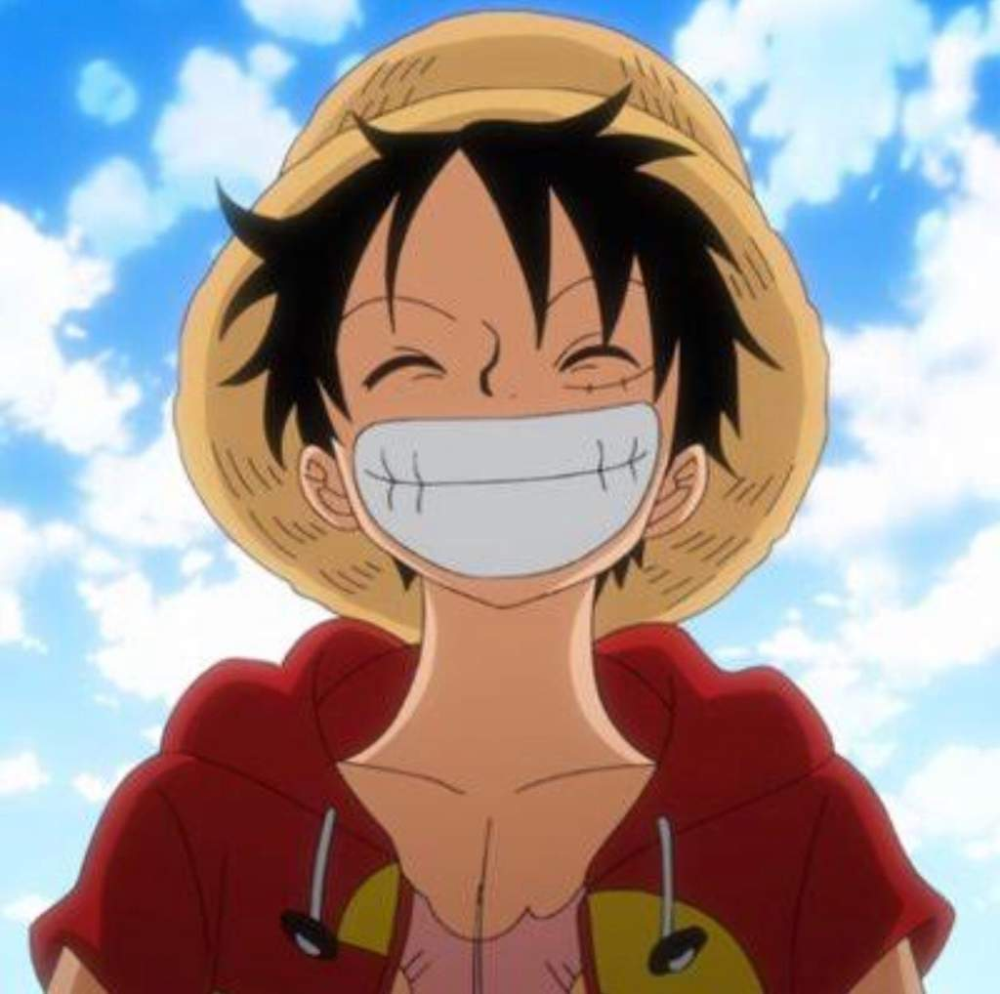
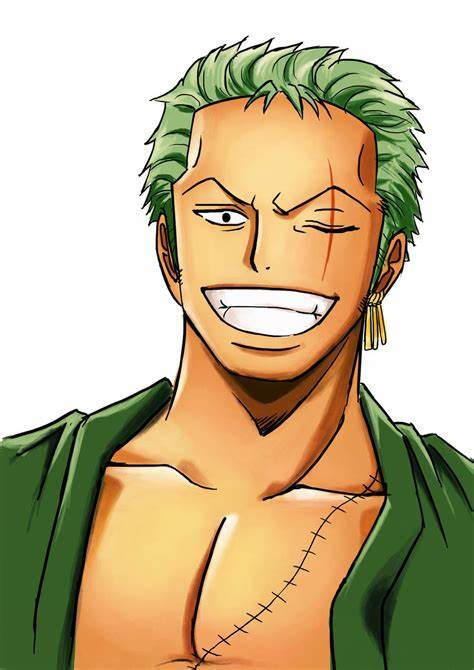
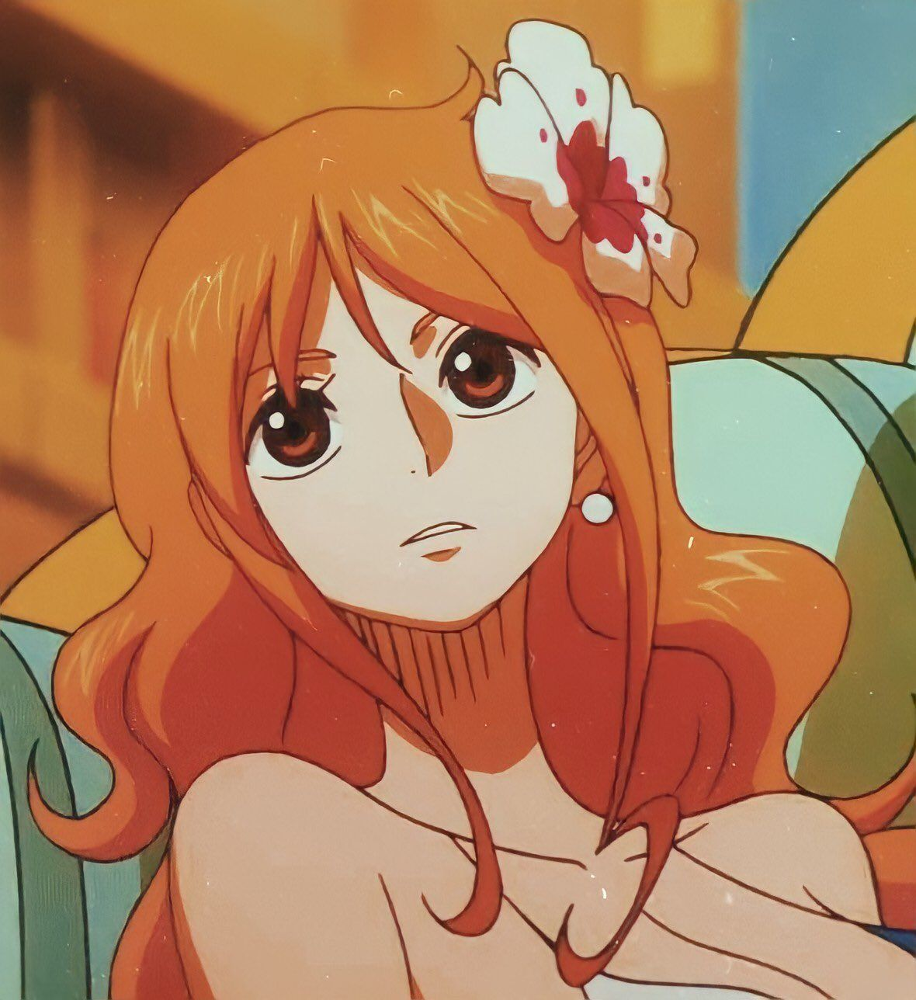
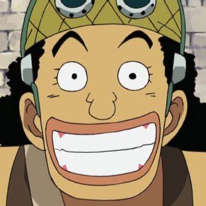
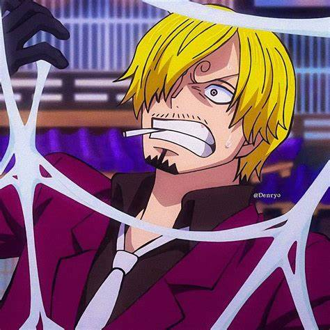
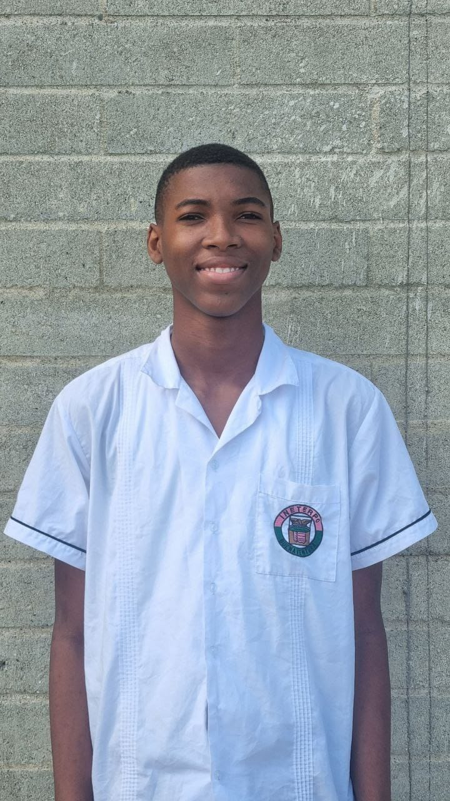

One Piece es una serie de manga y anime que sigue las aventuras de Monkey D. Luffy y los Piratas del Sombrero de Paja mientras navegan el vasto y peligroso océano conocido como Grand Line. Luffy, quien sueña con encontrar el tesoro “One Piece” y ser el Rey de los Piratas, enfrenta desafíos épicos junto a su diversa tripulación, cada uno con habilidades únicas. Desde batallas con otros piratas hasta alianzas con poderosos guerreros, cada episodio trae nuevas sorpresas y aventuras.
Los Piratas del Sombrero de Paja
Cada miembro de los Piratas del Sombrero de Paja aporta una habilidad especial y una personalidad única. Aquí te presentamos a algunos de los personajes principales:
- Monkey D. Luffy: Capitán y usuario de la Fruta Gomu Gomu, es conocido por su tenacidad y su voluntad inquebrantable de proteger a sus amigos.

- Roronoa Zoro: Espadachín y fiel compañero de Luffy, su sueño es convertirse en el mejor espadachín del mundo.

- Nami: Navegante experta y amante del dinero, tiene un profundo conocimiento de cartografía y navegación.

- Usopp: Francotirador y contador de historias, aunque miedoso, su lealtad a la tripulación es innegable.

- Sanji: Cocinero y maestro en el arte de las patadas, Sanji sueña con encontrar All Blue, el océano donde convergen todos los peces del mundo.

Mundos y Lugares Icónicos
Desde East Blue hasta los territorios más oscuros de la Grand Line, el mundo de One Piece está lleno de islas y lugares sorprendentes:
- Isla de Drum: La tierra helada y hogar del doctor Tony Tony Chopper.
- Water 7: Una ciudad construida sobre el agua, conocida por sus poderosos carpinteros y sus canales inspirados en Venecia.
- Impel Down: La prisión submarina, donde se encierran a los criminales más peligrosos del mundo.
- Marineford: Escenario de la famosa batalla entre los Marines y los piratas, un evento que cambió el curso de la historia.
Cada isla trae consigo un conjunto de aventuras y desafíos que empujan a la tripulación a sus límites y desarrollan sus habilidades y carácter.
Las Frutas del Diablo
Las Frutas del Diablo son místicas y dan habilidades únicas a quienes las comen, aunque les quitan la capacidad de nadar. Algunos tipos incluyen:
- Frutas Paramecia: Ofrecen habilidades únicas, como la de Luffy (elasticidad) y Buggy (separación de cuerpo).
- Frutas Zoan: Permiten a los usuarios transformarse en animales, como la habilidad de Chopper de convertirse en diferentes formas de reno.
- Frutas Logia: Otorgan habilidades basadas en elementos de la naturaleza, como el poder de Ace de controlar el fuego.
Estas frutas son tanto una bendición como una maldición, y muchos personajes buscan obtenerlas para ganar poder en el mundo pirata.
Momentos Épicos
One Piece es conocido por sus momentos emocionantes y desgarradores que han tocado el corazón de millones de fans. Algunos de los momentos más recordados incluyen:
- El sacrificio de Merry: La despedida del Going Merry, el primer barco de la tripulación, es uno de los momentos más emotivos de la serie.
- La declaración de Luffy en Enies Lobby: “¡Devuélvanme a Robin!” gritó Luffy, quemando la bandera del Gobierno Mundial en desafío.
- La batalla en Marineford: La guerra donde se enfrentaron los Piratas de Barbablanca y la Marina, con uno de los desenlaces más impactantes.
¿Dónde Ver One Piece?
One Piece está disponible en varias plataformas de streaming, donde puedes ver desde el primer episodio hasta los arcos más recientes. Si eres nuevo en la serie, ¡prepárate para una historia llena de acción, risas y momentos inolvidables!
Sammir Steven Riascos Carabali
11-3
